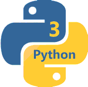

QView™ is a powerful Visualization and Monitoring facility, which allows embedded developers to rapidly create remote graphical user-interfaces to monitor and control their embedded devices from a host (desktop) computer. The interfaces created by QView™ can visualize the tracing data produced by QP/Spy and can also interact with the target by sending commands and injecting events to the embedded target.
As you can see in the screen shots below, a QView™ user interface consists of the text box with extensible menus plus a customizable canvas that can serve as a remote graphical user-interface to your embedded device. The canvas can contain various "widgets", such as buttons, sliders, guages, graphs, animations etc. The actual functionality of the virtual GUI obviously depends on the target system and the embedded code it is running. Therefore, the QView™ provides only a skeleton, which is then customized by user-supplied scripts written in Python (version 3).
QView™ has been specifically designed for extensibility, so that you can quickly customize its GUI and behavior to your specific embedded project, so that you can use QView™ as a powerful custom Human-Machine Interface (HMI) for your projects. The cusomization is accomplished in Python (version 3), which means that it is naturally platform-neutral and runs without any changes on Windows, Linux, or macOS.
Out of the box, QView™ supports the following commands (NOTE: This basic functionality can be extended in the QView™ customization):
The sequence diagram below shows the general structure of QView™. The embedded Target is running an instrumented code that communicates with the QSPY Host application over the Target data link (red arrows). This communication is based on the QP/Spy Protocol.
The QView™ (Python script) attaches to the QSPY host application by means of the UDP socket that QSPY opens specifically for attaching various "front-ends". This communication (blue arrows) uses the same packet structure as the QP/Spy Protocol, but without the HDLC framing, without transparency (escaping), and without the checksum.
A Target produces QS trace records, which the QSPY Back-End forwards to the UDP Socket, so that any attached Front-End (such as QView™) receives all this data.
The Front-End (QView™) sends commands as UDP packets to QSPY. For some of those packets, the QSPY Back-End supplies additional information (e.g., translation between symbolic names and binary addresses according to the QS dictionaries collected from the Target).
The qview.py script can be used standalone, without any installation in your Python system (see Running QView™ below).
Alternatively, you can use *your own Python** installation, into which you can install the latest QView™ with pip from the PyPi index by executing the following command:
pip install qview
If you are using QView™ as a standalone Python script, you invoke it as follows:
python3 <path-to-qview-script>/qview.py [<cust_script> [<qspy_host> [<qspy_port>]]]
Alternatively, if you've installed QView™ with pip, you invoke it as follows:
qview [cust_script] [qspy_host[:udp_port]] [local_port]
cust_script - optional customization Python script for your specific target system. If not specified, qview will provide only the generic user interface for interacting with the target (e.g., reset, setting QS filters, posting events, etc.)qspy_host[:udp_port] - optional host-name/IP-address:port for the host running the QSPY host utility. If not specified, the default is 'localhost:7701'.local_port - optional the local UDP port to be used by "qview". If not specified, the default is '0', which means that the operating system will choose an open port.Windows Hosts
python3 %QTOOLS%\qview\qview.py
opens the generic (not customized) "qview".
python3 %QTOOLS%\qview\qview.py dpp.py
opens "qview" with the customization provided in the dpp.py script located in the current directory.
qview ..\qview\dpp.py localhost:7701
opens "qview" (installed with pip) with the customization provided in the dpp.py script located in the directory ..\qview. The "qview" will attach to the QSPY utility running at localhost:7701.
qview dpp.py 192.168.1.100:7705
opens "qview" (installed with pip) with the customization provided in the dpp.py script located in the current directory. The "qview" will attach to the QSPY utility running remotely at IP address 192.168.1.100:7705.
Linux/MacOS Hosts
python3 $(QTOOLS)/qview/qview.py
opens the generic (not customized) "qview".
python3 $(QTOOLS)/qview/qview.py dpp.py
opens "qview" with the customization provided in the dpp.py script located in the current directory.
qview *.py ../qview/dpp.py localhost:7701
opens "qview" (installed with pip) with the customization provided in the dpp.py script located in the directory ../qview. The "qview" will attach to the QSPY utility running at localhost:7701.
qview dpp.py 192.168.1.100:7705
opens "qview" (installed with pip) with the customization provided in the dpp.py script located in the current directory. The "qview" will attach to the QSPY utility running remotely at IP address 192.168.1.100:7705.
In contrast to TCP, which is stream-oriented, UDP is packet-oriented, so the only way to "attach" two ends of communication is to exchange packets. Consequently, immediately after QView™ is launched, it tries to attach by sending the ATTACH packet to QSPY. If QSPY responds with the ATTACH response, QView™ considers that it is "attached".
However, if the ATTACH response does not arrive within a second or two (because perhaps QSPY is not running), QView™ opens a modal dialog box that reminds you to run QSPY, as shown in the screen-shot below:
qview_before.gif Depending how you start QSPY, the dialog box might close automatically, which means that QView has successfully attached to QSPY. However, if the dialog box does not close, you need to click the Attach button to send ATTACH packet to QSPY, until QView™ receives the ATTACH response from QSPY. If you can't "attach", you can click the Close button to close QView™.
python3 qview.py dpp.py 192.168.1.101).Before QView™ can correctly interpret any data from the Target, it needs to obtain certain information about the Target, such as the sizes of object pointers, function pointers, event signals, etc. This information is provided in the QS_TARGET_INFO trace record coming from the Target.
To inform you about the Target status, QView™ displays the Target: UNKNOWN in the status bar when the target is "unknown":
If this happens, you can explicitly request the Target information by means of the "Commands->Query Target Info" menu:
After the Target information is received, the QView™ status bar shows the build time-stamp of the Target image.
Next: QView User Interface